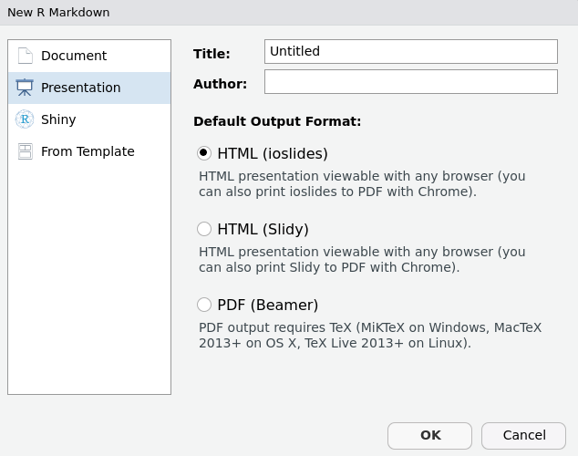

Semillero de R - FacCA
Ecosistema R Markdown II
Resumen R Markdown 1
- Definición de markdown.
- Flujo de trabajo inicial con R Markdown.
- File -> New File -> R Markdown.
- Guardar con codificación UTF-8.
- Componentes de R Markdown:
- Metadatos. (
--- ---) - Fragmentos de R. (
```{r} ```)
- Metadatos. (
- Teclas de acceso rápido:
Ctrl + Alt + i: insertar código R.Ctrl + Shift + k: compilar el documento a formato .html.
- Elementos básicos: títulos, viñetas, opciones de texto, insertar imagenes, insertar hipervínculos.
- Publicación de documentos en Rpubs.
- Regístrese aquí.
- R Markdown: The Definitive Guide
Formatos de salida
- R Markdown proporciona dos tipos de salidas:
- Documentos
html_documentgithub_documentlatex_documentmd_documentodt_documentpdf_documentrtf_documentword_document
- Presentaciones (diapositivas)
ioslides_presentationslidy_presentation
beamer_presentation
power_presentation
- Documentos
Sintaxis de R Markdown
Sintaxis de R Markdown I
- Encabezados:
#,##. *Cursiva***Negrilla***Negrilla cursiva*- Insertar imagen:
 - Insertar hipervínculo:
[](url.com)
Sintaxis de R Markdown II
- Marcado de texto con comillas transversas
`mean()` - Texto con opción de celda de código:
```ejemplo``` - Ejecución de código en línea de texto:
```letra r código``` - Más opciones de texto:
H~3~PO~4~—-> H3PO42^2^—-> 22- Insertar citación o notas al pie del texto con
^[]—-> Semillero R1 - Salto de línea en markdown con
<br>.
Sintaxis de R Markdown II
- Citas textuales con
`>`
> "I thoroughly disapprove of duels. If a man should challenge me,
I would take him kindly and forgivingly by the hand and lead him
to a quiet place and kill him."
>
> --- Mark Twain “I thoroughly disapprove of duels. If a man should challenge me, I would take him kindly and forgivingly by the hand and lead him to a quiet place and kill him.”
— Mark Twain
Sintaxis de R Markdown II
- Expresiones matemáticas
$$Latex$$: ecuación centrada con salto de línea.$Latex$: ecuación en línea.- Ejemplos:
$f(x) = {n \choose k} p^{x}(1-p)^{n-x}$- En línea \(f(x) = {n \choose k} p^{x}(1-p)^{n-x}\)
$$f(x) = {n \choose k} p^{x}(1-p)^{n-x}$$\[f(x) = {n \choose k} p^{x}(1-p)^{n-x}\]
- Documentación Latex.
- Símbolos matemáticos en Latex.
Sintaxis de R Markdown II
- Tablas 1:
Columna 1 | Columna 2 | Columna 3
--------- | --------- | ---------
Dato 1 | Dato 2 | Dato 3| Columna 1 | Columna 2 | Columna 3 |
|---|---|---|
| Dato 1 | Dato 2 | Dato 3 |
- Tablas 2:
Columna 1 | Columna 2 | Columna 3
:------: | --------: | :------
Dato 1 | Dato 2 | Dato 3
Dato 1 | Dato 2 | Dato 3| Columna 1 | Columna 2 | Columna 3 |
|---|---|---|
| Dato 1 | Dato 2 | Dato 3 |
| Dato 1 | Dato 2 | Dato 3 |
Editando documentos html
Metadatos
title: título principal del documento.subtitle: subtítulo.date: fecha.output: tipo de salida.toc: opción para activar tabla de contenidos.toc_depth: configurar los encabezados a tener en cuenta para la tabla de contenidos.toc_float: tabla de contenido flotante.collapsed: tabla de contenido flotante y plegable.smooth_scroll: animaciones de tabla de contenido con el clic.
number_sections: numeración de secciones.theme: tema del documento.highlight: estilo de resaltado.df_print: impresión dedata.framecon formato.code_folding: opción que permite mostrar u ocultar el código en el documento.css: personalización avanzada a través decss.
Fragmentos de R
- Insertar fragmento de R con
Ctrl + ALt + i. fig.align: alineación de figuras e imágenes.fig.width:ancho de gráficos.fig.height:altura de gráficos.out.width:ancho de imágenes.out.height:alto de imágenes.echo:opción para imprimir el código en el documento.eval:opción para evaluar el código, es decir, producir resultados.warning:opción para desactivar las advertencias.message:opción para desactivar los mensajes.
Metadatos y chunk de R
- Plantilla de metadatos:
---
title: "Título"
subtitle: "Subtítulo"
author: "Nombre Apellido"
date: "01 de enero de 1900"
output:
html_document:
toc: true
toc_depth: 3
toc_float: true
collapsed: true
smooth_scroll: true
number_sections: true
theme: readable
highlight: tango
df_print: paged
code_folding: hide
css: estilo.css
---- Plantilla fragmento de R:
``{r, fig.align='center', fig.width=8, fig.height=5, echo=TRUE, eval=TRUE}
``Presentaciones
Presentación ioslides
- Crear archivo de extensión .Rmd
- File -> New File -> R Mardown -> Presentation -> Ioslides
- Guardar archivo .Rmd
- File -> Save with Encoding -> UTF-8.
- Nueva diapositiva con
##. - Diapositiva de tema principal con
#.
Notas
https://unal-semilleror-facca.github.io/↩︎